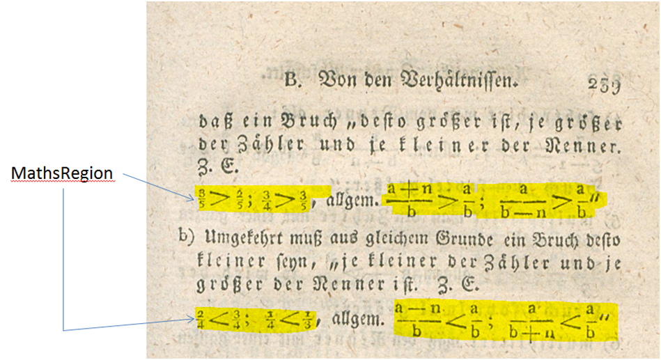
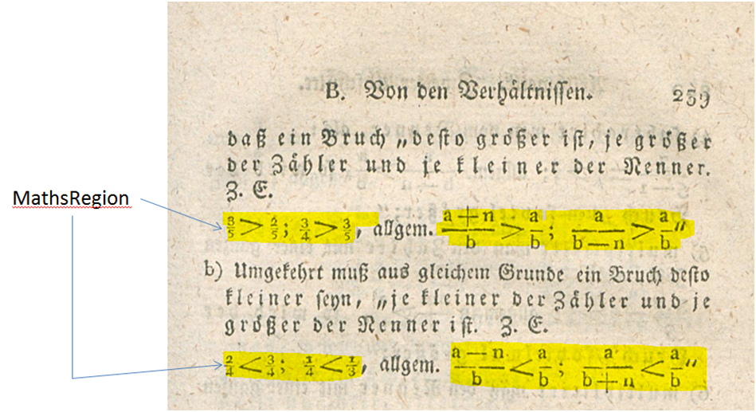

Mathematische Zeichen (MathsRegion)
Gleichungen, Formeln, mathematische Ausdrücke werden (auch wenn einzelne Zeichen darstellbar wären) nicht als Text erfasst, sondern als MathsRegion gekennzeichnet.

Gleichungen, Formeln, mathematische Ausdrücke werden (auch wenn einzelne Zeichen darstellbar wären) nicht als Text erfasst, sondern als MathsRegion gekennzeichnet.
